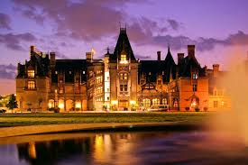
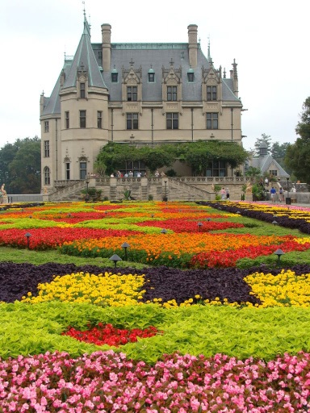
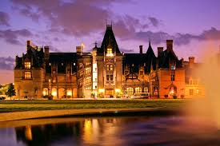
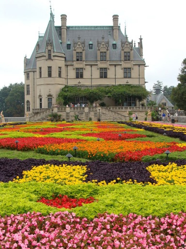
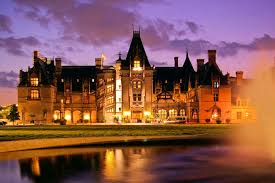
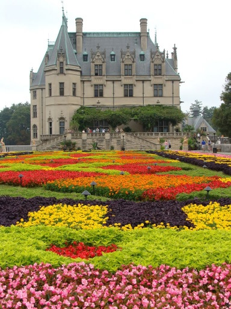

The historic Biltmore Estate in Asheville, North Carolina remains America’s largest privately owned home and one of the state’s most enduring attractions. The estate boasts a 250-room French Renaissance chateau, acres of gardens, Antler Hill Village and Winery and luxury inn.
In 1888, George Washington Vanderbilt, grandson of “Commodore” Cornelius Vanderbilt, was captivated by the beauty of the Blue Ridge Mountains and decided to build a country retreat in Asheville. The retreat he envisioned grew into a 250-room home surrounded by a pleasure park and formal gardens. Vanderbilt called his estate “Biltmore” and invited family and friends to stay as guests.

